| dataset | I | II | III | IV |
|---|---|---|---|---|
| mean x | 9.00 | 9.00 | 9.00 | 9.00 |
| mean y | 7.50 | 7.50 | 7.50 | 7.50 |
| sd x | 3.32 | 3.32 | 3.32 | 3.32 |
| sd y | 2.03 | 2.03 | 2.03 | 2.03 |
| r | 0.82 | 0.82 | 0.82 | 0.82 |
Lecture 7: Data Visualisation with matplotlib
BAA1118 - Foundations of Programming for Analytics & AI
Damien Dupré
Summary Statistics Lie
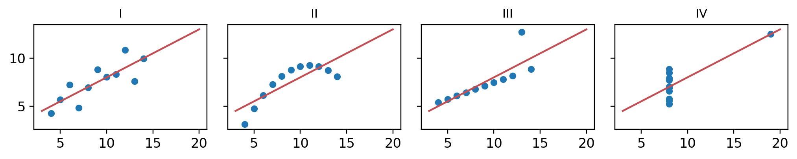
Anscombe’s quartet (1973): same means, standard deviations, correlation and best-fit line. Only the plots tell them apart. Always plot the data.
Install the Packages
matplotlib is not part of Python: Colab has it, your own Python does not. Install it once, in a code cell of a VS Code notebook:
- Use
%pip, not!pip:%pipinstalls into the Python that runs your notebook, while!pipcan install into a different Python and the import then fails - Wait until the cell finishes, then click Restart in the notebook toolbar
- If a package is already installed, pip says “Requirement already satisfied”, which is fine
Then run the cell on the next slide: no error means it worked.
The gapminder Dataset
Each row is a country in a given year, from 1952 to 2007. As in lecture 6: read it and keep 2007 in g2007.
- The columns:
country,continent,year,lifeExp(in years),popandgdpPercap(in US dollars) - Every chart today starts from
gapminder, or fromg2007, its 142 countries in 2007
Your Turn: Get Set Up
- In VS Code, open your
BAA1118folder, thenFile -> New File... -> Jupyter Notebook - At the top right, click Select Kernel, then Python Environments…, then the Python that says 3.14
- In the first cell, run
%pip install pandas matplotlib seaborn. When it has finished, click Restart - In a second cell, run:
You should see Python 3.14 at the top right, then (142, 6). Save the notebook in BAA1118 as lecture_7.ipynb. Done? Help your neighbour.
When It Does Not Work
| What you see | What to do |
|---|---|
No Jupyter Notebook in New File... |
Install the Python and Jupyter extensions: tutorial 5, step 2 |
| No Python 3.14 in the kernel list | Quit VS Code completely and open it again. Still none? Install Python as in tutorial 5, step 1 |
VS Code asks to install ipykernel |
Click Install |
ModuleNotFoundError |
Select Python 3.14, run the %pip cell again, then click Restart |
CERTIFICATE_VERIFY_FAILED, on a Mac |
In Applications, open the Python 3.14 folder and double-click Install Certificates.command. Then run the cell again |
A network error in the %pip cell |
Run the cell again |
| No Python or VS Code on your laptop | Follow today in Colab, where these packages are already installed. Then set up with tutorial 5, on Loop |
Test 2, on 26 November, runs in a VS Code notebook: fix your setup now, not on the day.
1. Basic Visualisations with matplotlib
Using matplotlib
matplotlib is Python’s main plotting library: pandas, seaborn and most charts written by AI assistants draw with it. A chart is built in layers, one line of code each:
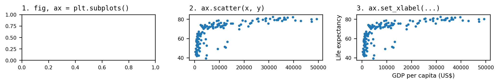
Read from top to bottom: each line adds to what the lines above it drew.
The Canvas: fig and ax
plt.subplots()returns two things, unpacked as in lecture 3:fig, the whole canvas, andax, the plotting area inside it.figsize: width and height, in inches- Only an empty frame: every layer from now on is a method of
ax, such asax.scatter()
Mapping x and y
A geometry’s first two arguments are its mapping: the x column, then the y column.
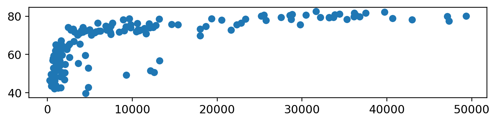
One point per country in 2007: GDP per capita across, life expectancy up.
More Than x and y
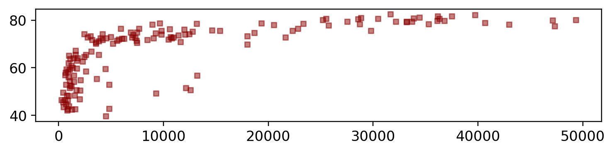
color: a name or a code, such as"#C44E52".s: the size.marker: the shape,"o","s"or"^".alpha: 0 is invisible, 1 solid, so overlaps show darker- Each is one value for the whole layer: section 2 colours by continent
Geometries
Each kind of chart has its own ax method, its geometry:
| Method | Draws | To show |
|---|---|---|
ax.scatter(x, y) |
points | how two columns relate |
ax.plot(x, y) |
a line | a change over time |
ax.bar(x, heights) |
bars | one number per category |
ax.barh(y, widths) |
sideways bars | the same, for long names |
ax.hist(values) |
a histogram | how one column is spread |
ax.boxplot(groups) |
boxes | the spread in each group |
The question picks the geometry. All the others: plot types.
Line Chart
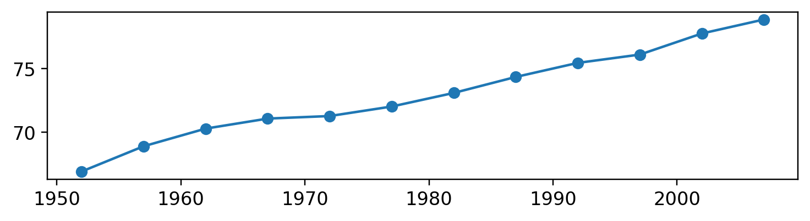
- A line joins the rows in order: keep one country first, or it zigzags through all 142
marker="o"adds a dot for each year: Ireland, from 67 years in 1952 to 79 in 2007
Bar Chart
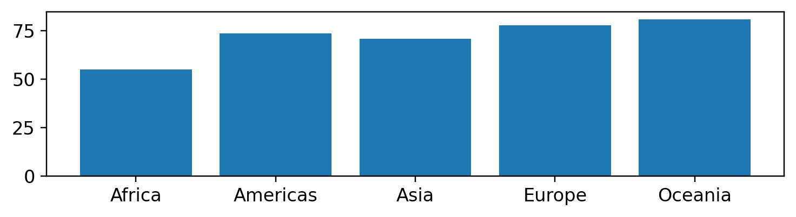
groupby()gives one mean per continent, with the continents as the index (lecture 6):means.indexgives the x positions,means.valuesthe heights- A bar’s length is its value, so the axis starts at 0
Histogram
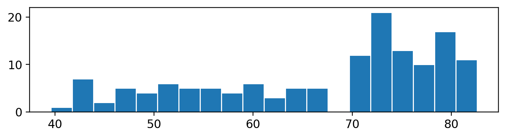
- One column only: matplotlib cuts it into 20 bins and counts the countries in each
- 83 countries are above 70 years, and a tail runs down to 40. Try several
bins: too few hide the shape, too many turn it into noise
Boxplot
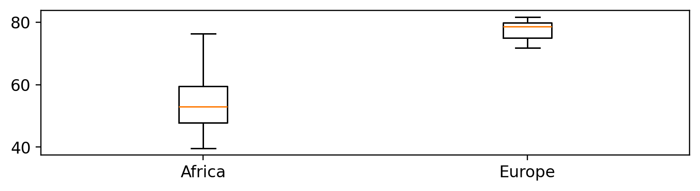
- A list of columns, one box each, named by
tick_labels - Line: the median. Box: the middle 50%. Whiskers: up to 1.5 box-lengths. Dots: outliers
Your Turn: First Charts
Replace each ____, using the comments, then run the cell:
import pandas as pd
import matplotlib.pyplot as plt
url = "https://raw.githubusercontent.com/damien-dupre/data/refs/heads/master/gapminder.csv"
gapminder = pd.read_csv(url)
g1952 = gapminder[gapminder["year"] == 1952]
fig, ax = plt.subplots()
ax.____(g1952["lifeExp"], bins=20) # a histogram, with .hist()
plt.show()
china = gapminder[gapminder["country"] == ____] # "China", in quotes
fig, ax = plt.subplots()
ax.____(china["year"], china[____]) # a line, with .plot(), of "lifeExp"
plt.show()You should see two charts: 1952, with two humps, then China’s line, which drops in 1962.
Solution
import pandas as pd
import matplotlib.pyplot as plt
url = "https://raw.githubusercontent.com/damien-dupre/data/refs/heads/master/gapminder.csv"
gapminder = pd.read_csv(url)
g1952 = gapminder[gapminder["year"] == 1952]
fig, ax = plt.subplots()
ax.hist(g1952["lifeExp"], bins=20) # two humps: around 40, and around 65
plt.show()
china = gapminder[gapminder["country"] == "China"]
fig, ax = plt.subplots()
ax.plot(china["year"], china["lifeExp"]) # 1962: the Great Leap Forward famine
plt.show()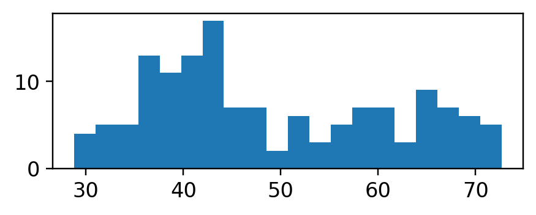
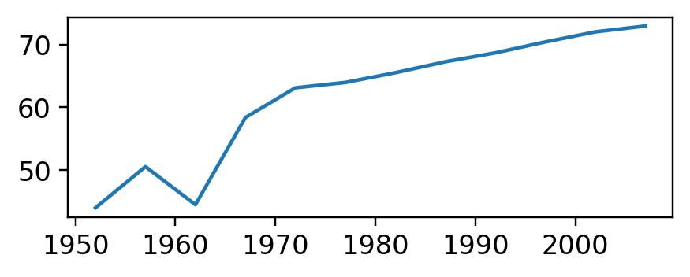
2. Advanced Visualisations with matplotlib
Grey Everything, Colour One Thing
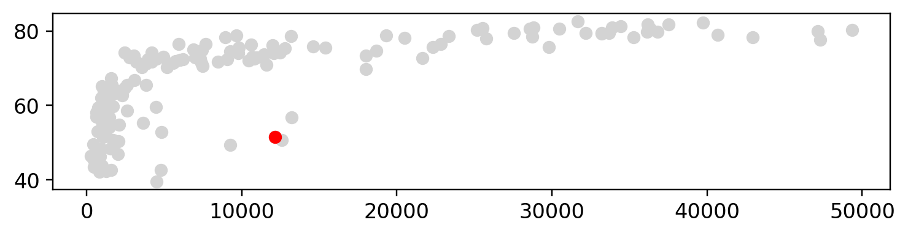
- Two layers: every country in grey, then Equatorial Guinea in red, on top
- Bars work the same way: grey bars, then
ax.bar()again for the ones to colour
Colour by Group
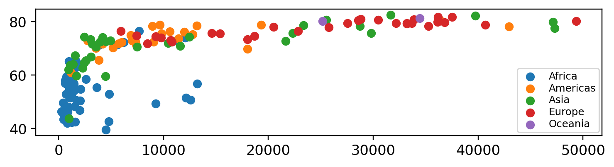
- matplotlib colours a layer, not a column: a loop draws one layer per continent
label=names each layer, andax.legend()lists the names
Styles
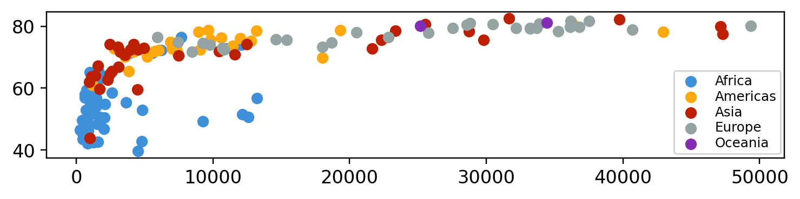
- A style changes every chart after it:
petroff10’s colours stay distinct for colour-blind readers. Others:"ggplot","bmh","grayscale"
Scales
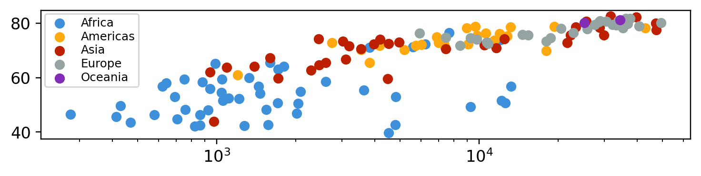
- On a log axis every doubling covers the same distance: the curve becomes a line, which lecture 8 fits.
ax.set_ylim(0, 90)sets a range
Labels
fig, ax = plt.subplots(figsize=(8, 1.45))
for continent in ["Africa", "Americas", "Asia", "Europe", "Oceania"]:
subset = g2007[g2007["continent"] == continent]
ax.scatter(subset["gdpPercap"], subset["lifeExp"], label=continent)
ax.legend()
ax.set_xscale("log")
ax.set(xlabel="GDP per capita (US$, log scale)", ylabel="Life expectancy (years)")
ax.set_title("Each doubling of income comes with a longer life", loc="left")
plt.show()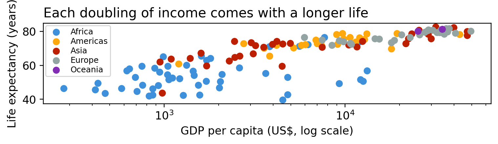
ax.set()sets several labels in one line. The title states the finding
Panels
g1952 = gapminder[gapminder["year"] == 1952]
fig, axes = plt.subplots(1, 2, figsize=(9, 1.6), sharey=True)
axes[0].scatter(g1952["gdpPercap"], g1952["lifeExp"])
axes[0].set(title="1952", xscale="log")
axes[1].scatter(g2007["gdpPercap"], g2007["lifeExp"])
axes[1].set(title="2007", xscale="log")
plt.show()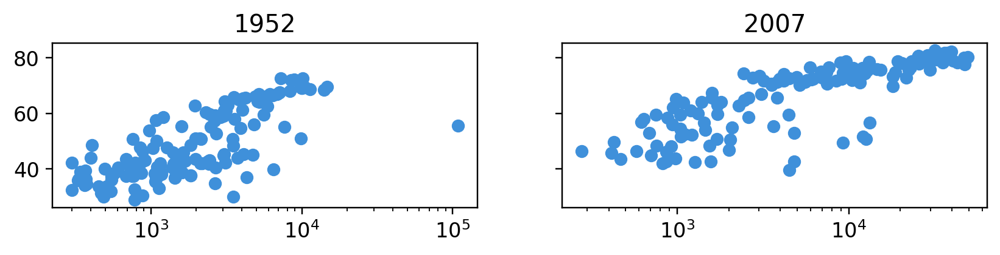
- One row of two panels:
axes[0]andaxes[1], each with its own layers sharey=True: one y-axis for both. Never two y-axes on one panel
Reference Lines
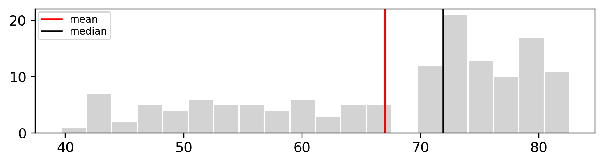
- pandas computes the number, and
ax.axvline()draws it as a layer - Mean 67, median 72: the tail of short lives pulls the mean down
Saving a Figure
- A relative path: the file appears beside your notebook. To save into a folder, such as
"output/lifeExp_2007.png", the folder must already exist dpi=300for print, 150 for a screenbbox_inches="tight"stops the labels being cut off at the edges.pngfor documents and slides;.svgor.pdffor anything that will be resized- Save with code, never with a right-click: the code is the record of how it was made
Your Turn: One Good Chart
Ireland in 2007. Replace each ____, using the comments:
import pandas as pd
import matplotlib.pyplot as plt
url = "https://raw.githubusercontent.com/damien-dupre/data/refs/heads/master/gapminder.csv"
gapminder = pd.read_csv(url)
g2007 = gapminder[gapminder["year"] == 2007]
ireland = g2007[g2007["country"] == "Ireland"]
fig, ax = plt.subplots()
ax.scatter(g2007["gdpPercap"], g2007["lifeExp"], color=____) # all: "lightgrey"
ax.scatter(ireland["gdpPercap"], ireland["lifeExp"], color=____) # Ireland: "red"
ax.set(xlabel=____, ylabel=____) # both labels, each with its unit
ax.set_title(____) # a title that states the finding
plt.show()You should see Ireland in red, at the top right. Then save it, with fig.savefig().
Solution
import pandas as pd
import matplotlib.pyplot as plt
url = "https://raw.githubusercontent.com/damien-dupre/data/refs/heads/master/gapminder.csv"
gapminder = pd.read_csv(url)
g2007 = gapminder[gapminder["year"] == 2007]
ireland = g2007[g2007["country"] == "Ireland"]
fig, ax = plt.subplots()
ax.scatter(g2007["gdpPercap"], g2007["lifeExp"], color="lightgrey")
ax.scatter(ireland["gdpPercap"], ireland["lifeExp"], color="red")
ax.set(xlabel="GDP per capita (US$)", ylabel="Life expectancy (years)")
ax.set_title("Ireland: 5th richest country, but 22nd for life expectancy")
plt.show()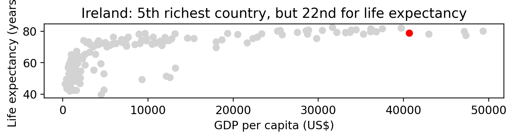
3. Combine pandas and matplotlib
A New Column, Then Plot
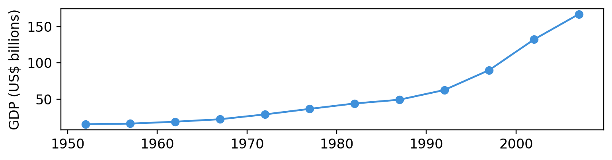
- pandas first: lecture 6’s
gdp_bn, then the filter, once the column exists - Then matplotlib draws it like any column: 15 to 167 billion dollars
groupby(), Then Plot
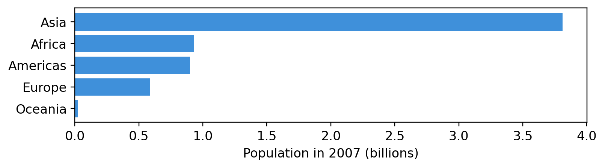
- Sorted:
barh()draws from the bottom up, so the largest ends on top - Asia: 3.8 billion people, more than the four others together
pivot_table(), Then Plot
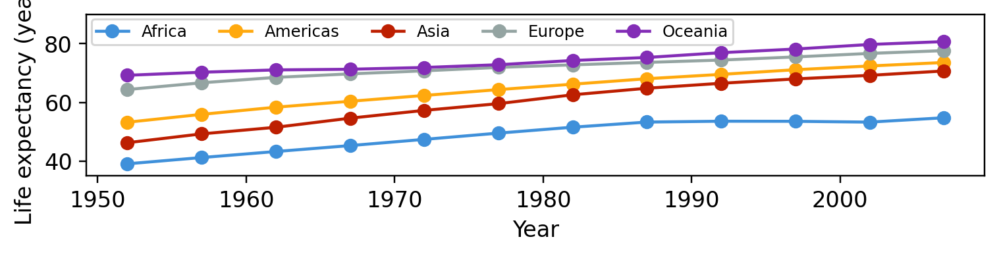
- Lecture 6’s table turned round: years as rows, one column per continent
- pandas’
.plot()draws one line per column, with matplotlib, on yourax
Your Turn: Table to Chart
Replace each ____, using the comments, then run the cell:
import pandas as pd
import matplotlib.pyplot as plt
url = "https://raw.githubusercontent.com/damien-dupre/data/refs/heads/master/gapminder.csv"
gapminder = pd.read_csv(url)
g2007 = gapminder[gapminder["year"] == 2007]
medians = g2007.groupby(____)["gdpPercap"].____() # by "continent", with .median()
medians = medians.____() # lowest first, with .sort_values()
fig, ax = plt.subplots()
ax.____(medians.index, medians.values) # sideways bars, with .barh()
ax.set_xlabel(____) # a label, with its unit
plt.show()You should see five bars: Africa at the bottom, at about 1,450 dollars, and Oceania on top, at about 29,800.
Solution
import pandas as pd
import matplotlib.pyplot as plt
url = "https://raw.githubusercontent.com/damien-dupre/data/refs/heads/master/gapminder.csv"
gapminder = pd.read_csv(url)
g2007 = gapminder[gapminder["year"] == 2007]
medians = g2007.groupby("continent")["gdpPercap"].median() # incomes are skewed
medians = medians.sort_values()
fig, ax = plt.subplots()
ax.barh(medians.index, medians.values)
ax.set_xlabel("Median GDP per capita in 2007 (US$)")
plt.show()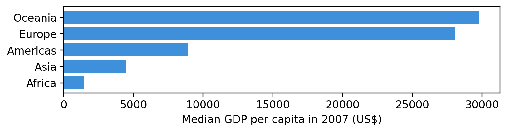
Same Chart, One Line
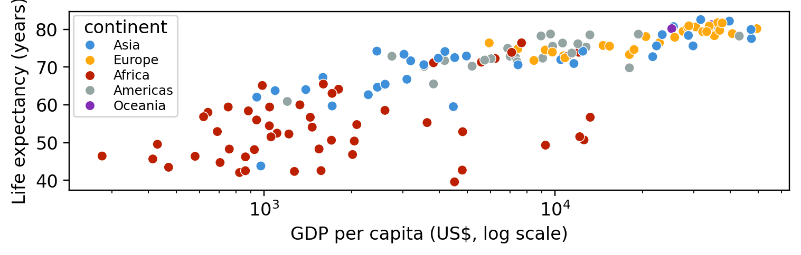
- seaborn takes the whole table in
data=, and the columns by name hue="continent"replaces the loop;ax=axdraws on yourax
What seaborn Computes For You
| Function | Draws | Watch out |
|---|---|---|
sns.histplot |
a histogram | it chooses the bins |
sns.boxplot |
a box per group | |
sns.scatterplot |
the points | |
sns.barplot |
the mean per group | error bars: errorbar=None |
sns.lineplot |
the mean per x value | a band: errorbar=None |
seaborn summarises before it draws, as pandas did in this section. If you cannot say what it computed, you cannot defend the chart.
4. Vibe Coding Visualisations
What Is Vibe Coding?
Describe the chart in plain English, and an AI assistant writes the code.
1. The prompt: “With pandas and matplotlib, using fig, ax: a scatter of gdpPercap against lifeExp from the DataFrame g2007, on a log x-axis, with labels and a title.”
2. The code it writes:
3. Read every line, then run it: its title only names the columns.
Check Before You Trust
Ask for:
- matplotlib, with
fig, ax - the table, and its columns
- the geometry
- labels and a title
Then check:
ax., orplt.everywhere?- do the columns exist?
- labels with units?
- a mean you did not ask for?
You may use an assistant’s code if you can explain every line of it. A KeyError names a column that does not exist: life_exp instead of lifeExp, for example.
Your Turn: Ask, Then Check
- Ask an AI assistant: “With pandas and matplotlib, using fig, ax: from a DataFrame called gapminder, with the columns country, continent, year, lifeExp, pop and gdpPercap, one line per continent of the mean lifeExp in each year, with labels and a title that states the finding.”
- Paste its code in a new cell, below the cell that reads
gapminder, then check it with the last slide’s list before you run it
You should see the chart of pivot_table(), Then Plot. If not, what did you fix?
References
- Quick start guide: matplotlib’s own introduction to
fig,axand the ax methods - Plot types: every geometry, each with its code
- An introduction to seaborn: the official tutorial
- Fundamentals of Data Visualization: free online, by Claus O. Wilke
- From Data to Viz: which chart for which data, as a decision tree

Thanks for your attention and don’t hesitate to ask if you have any questions!